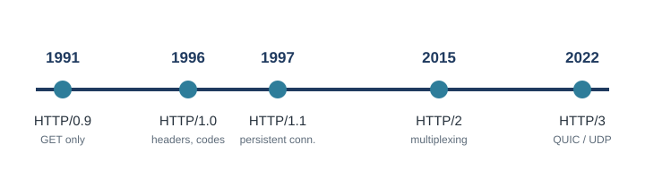

Early HTTP: Versions 0.9, 1.0 and 1.1
The first three versions turned a simple prototype into the foundation of the web.

HTTP/0.9 (1991)
Tim Berners-Lee created HTTP at CERN between 1989 and 1991 as part of the World Wide Web project. It was never formally standardized; it was a working prototype.
- Only one method:
GET. A request was a single line, such asGET /page.html. - The server sent raw HTML and immediately closed the connection.
- No headers, no status codes, and no error handling.
- Only plain HTML could be sent, so images were impossible.
HTTP/1.0 (1996)
The first formally documented version, published as RFC 1945.
- Added headers: metadata such as content type and length.
- Added the
POSTandHEADmethods. - Added status codes such as 200 OK, 301 redirect, 404 Not Found, and 500 server error.
- Allowed content beyond HTML, including images and files.
Major flaw: every request opened, used, and closed its own TCP connection. That was very slow for pages with many images and files.
HTTP/1.1 (1997 to 2015)
Published as RFC 2068 in 1997 and updated in 1999, HTTP/1.1 dominated the web for 18 years, longer than any other version.
| Feature | What it does |
|---|---|
| Persistent connections | One TCP connection carries many requests, cutting the delay of reopening connections. |
| Pipelining | The client can send several requests without waiting. Responses must still arrive in order, so one slow response holds up the rest (head-of-line blocking). |
| Chunked transfer encoding | A server can start sending before it knows the total size, which suits dynamically generated pages. |
| Cache control | Cache-Control, ETag and Last-Modified headers reduce repeated downloads. |
| Host header | Many websites can share one IP address (virtual hosting). |
| New methods | PUT, DELETE, OPTIONS and TRACE opened the door to REST APIs. |
To work around head-of-line blocking, browsers opened 6 to 8 parallel TCP connections per domain. This worked, but it wasted resources.